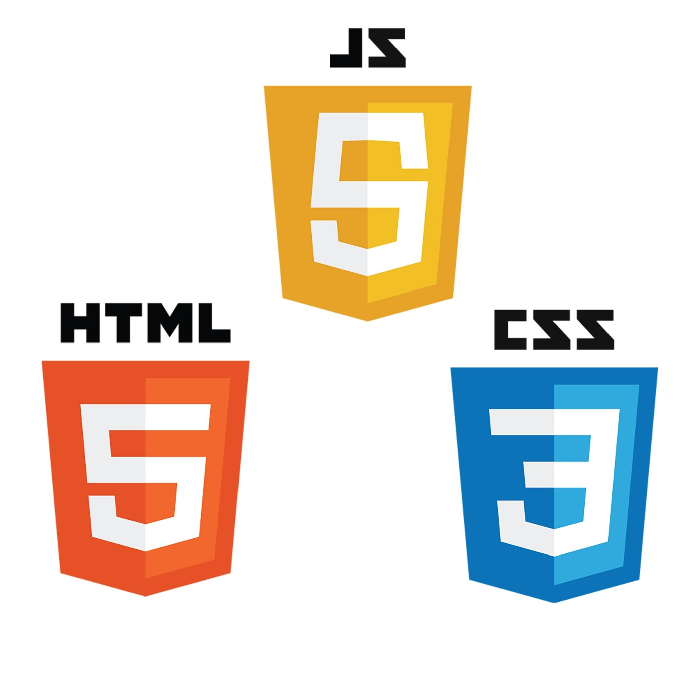

HTML / CSS↗
HTML / CSS↗01
Simple Recipes
A recipe website built to practise semantic page structure, links, images, and styling.
HTML · CSSView source ↗
SOFTWARE & WEB DEVELOPMENT STUDENT
I’m Najibullah — a developer in progress, learning by building responsive websites, experimenting with code, and turning ideas into useful things on the web.

BEHIND THE SCREEN
A little glimpse of the focus, practice, and iteration behind every project.
SELECTED PROJECTS
A selection of coursework and personal practice. Each project is a chance to sharpen the fundamentals and try something new.
HTML / CSS↗A recipe website built to practise semantic page structure, links, images, and styling.
 MULTI-PAGE SITE↗
MULTI-PAGE SITE↗A cinema-themed website exploring multi-section layouts, navigation, and visual hierarchy.
 JAVASCRIPT INTERACTION↗
JAVASCRIPT INTERACTION↗A car-themed page with a gallery lightbox, responsive sections, and interactive behaviour.
Project descriptions reflect coursework and practice. More detailed live demos will be added as they are published.
A LITTLE ABOUT ME
I’m studying software and web development and building a foundation in front-end development, programming, and problem-solving. I enjoy learning how a site works behind the scenes just as much as refining how it feels to use.
This portfolio is a living record of that progress — real practice, lessons learned, and the next thing I’m building.
Visit my earlier portfolio ↗CURRENT TOOLKIT
The tools I’m using and exploring as I grow my development skills. I value solid fundamentals over a long list of buzzwords.

Page structure, responsive styling, and interactive behaviour.

Version control, project repositories, and publishing work.

Exploring programming fundamentals and application development.

Practising core concepts and problem-solving approaches.
Learning how applications organise and retrieve information.
OUTSIDE THE EDITOR
I’m drawn to thoughtful design, photography, and the small details that make digital experiences feel considered.
HAVE A QUESTION OR IDEA?
Open to learning, collaboration, and conversations about web development.